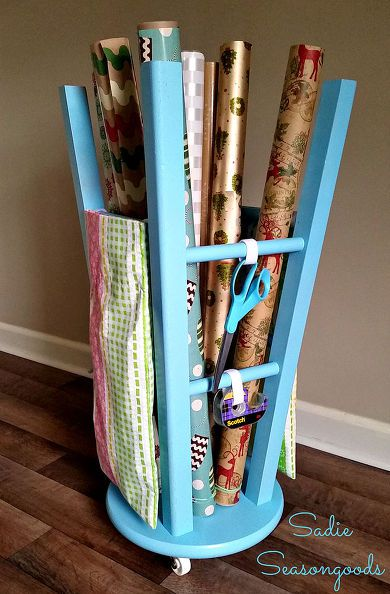

REPURPOSE

Repurposing is as old as human civilization, with many contemporary scholars investigating that way that different societies re-appropriate the
artifacts of older cultures in new and creative ways.
More recently, repurposing has been celebrated by 21st century hobbyists and arts-and-crafts organizations such as Instructables and other
Maker culture communities as a means of creatively responding to the ecological and economic crises of the 21st century.
Recent scholarship has attempted to relate these activities to American left- and right-libertarianism.
Repurposing is the use of a tool being re-channeled into being another tool, usually for a purpose unintended by the original tool-maker.
Typically, repurposing is done using items usually considered to be junk, garbage, or obsolete.
A good example of this would be the Earthship style of house, that uses tires as insulating walls and bottles as glass walls.
Reuse is not limited to repeated uses for the same purpose.
Examples of repurposing include using tires as boat fenders and steel drums or plastic drums as feeding troughs and/or composting bins.
Incinerator and power plant exhaust stack fly-ash is used extensively as an additive to concrete, providing increased strength.
This type of reuse can sometimes make use of items which are no longer usable for their original purposes, for example using worn-out clothes as rags.
Not all repurposing is necessarily environmentally friendly, take for instance the idea of repurposing older work trucks for
businesses in their infancy, in which their poor fuel economy can negate long term benefits since greater
spending of money for fuel, and more fumes output to the sky can prove to be environmentally unfriendly, in which repurposing vehicles for
electric car conversion can be the recommended alternative to that, though its cost can be negligible upfront.